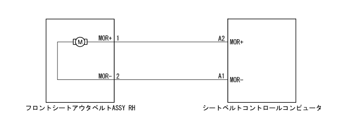
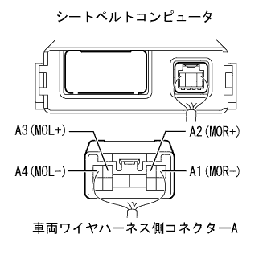
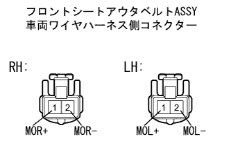

DTC B2000/21 D Seat Belt Motor Circuit Short to Power |
DTC B2005/21 Front Passenger Side Belt Motor Circuit Short to B+ |
| DTC No. | DTC Detection Condition | Inspection Area |
|---|---|---|
| B2000/21 | Short to B+ in the seat belt motor RH side circuit continues for 1 seconds or more |
|
| B2005/21 | Short to B+ in the seat belt motor LH side circuit continues for 1 seconds or more |
|

| Step 1 | Inspect Seat Belt Control Computer |
 |
Disconnect seat belt control computer connector A.
Turn IG ON.
Using SST (Toyota electrical tester), measure the voltage between each terminal of seat belt control computer vehicle side wire harness connector A and body ground.
| Tester Connection | Condition | Standard |
|---|---|---|
| A1 (MOR-) - Body ground | IG ON | Below 1 V |
| A2 (MOR+) - Body ground | ||
| A3 (MOL+) - Body ground | ||
| A2 (MOR-) - Body ground |
|
| ||||
| OK | ||
| ||
| Step 2 | Inspect Wire Harness and Connector (Front Seat Outer Belt Assembly RH or LH - Seat Belt Control Computer) |
for reference. |
Disconnect the connector of the front seat outer belt assembly RH or LH.
Check that seat belt control computer connector A is disconnected.
Turn IG ON.
Using SST (Toyota electrical tester), measure the voltage between each terminal of the vehicle side wire harness connector of the front seat outer belt assembly RH or LH and body ground.
| Tester Connection | Condition | Standard |
|---|---|---|
| 1 (MOR+) - Body ground | IG ON | Below 1 V |
| 2 (MOR-) - Body ground | ||
| 1 (MOL+) - Body ground | ||
| 2 (MOL-) - Body ground |
| Result | Proceed to |
|---|---|
| NG | A |
| OK (when B2000 is output) | B |
| OK (when B2005 is output) | C |
|
| ||||
|
| ||||
| A | ||
| ||